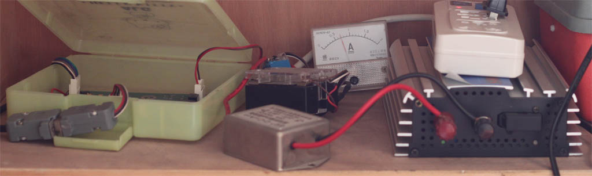
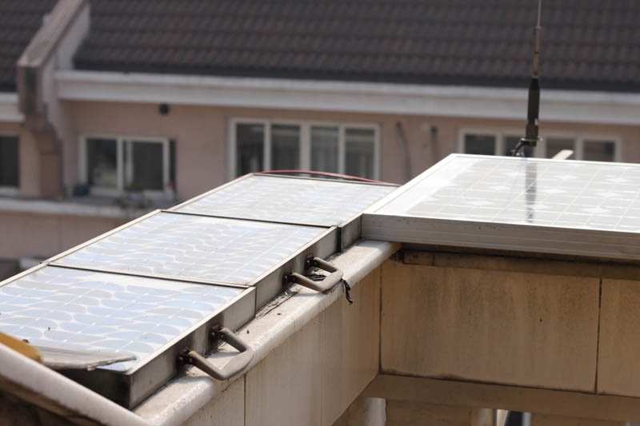
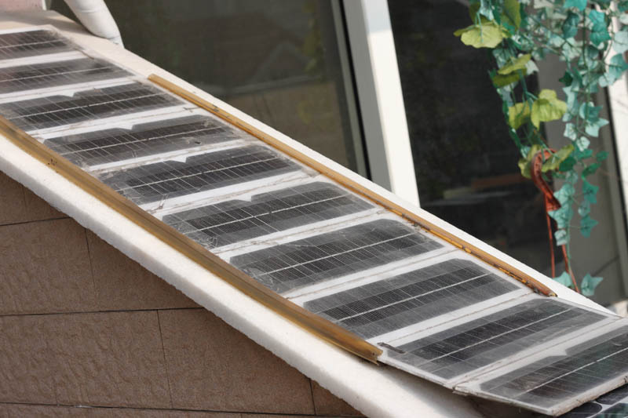
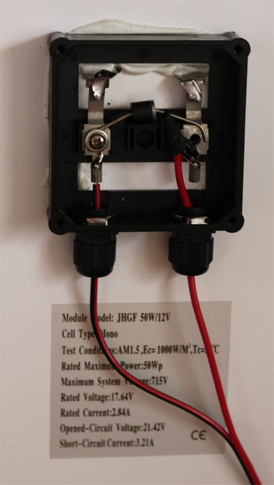
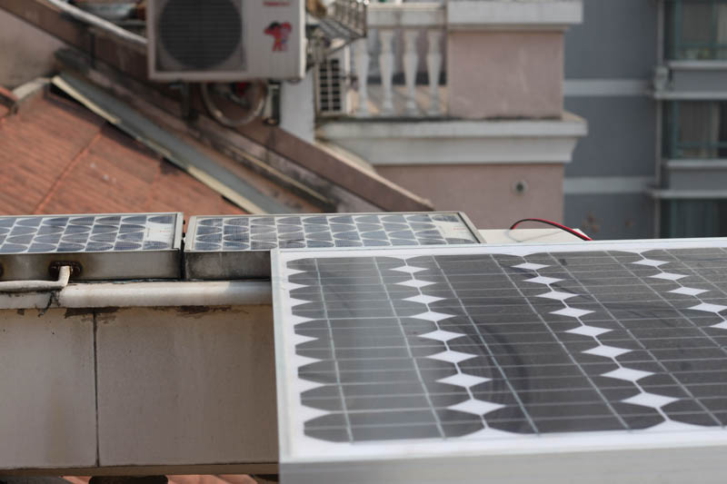
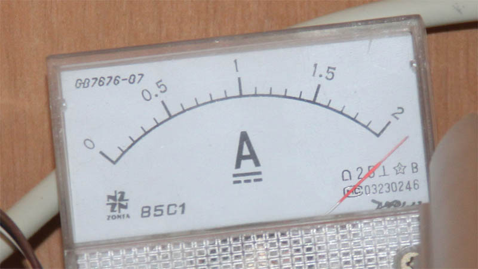

在露台上摆了两年的太阳能电池板，对一块12V/24AH的电池充电。最近从taobao买了块 50W的太阳能板，趁明天下雨之前，把它装上了。

在安装新板之前，太阳能板的充电电流是0.7A。图中黄色
塑料盒子里的是控制器，它负责监测电池电压，当电池电压低于设定值时，启动图右边的
充电器用市电对电池充电。控制器并且会根据时间，根据峰谷电的情况决定启动充电的电池
电压。


这是原来安装的太阳能板。第一张图右边是新板。

这是准备安装的新板，正极通过6个并联的1N5819接出。


这是安装上去的新板，新板安装后，在1月9日中午12点，充电电流超过了2A。Oh NO!我需要买块新的电流表了。